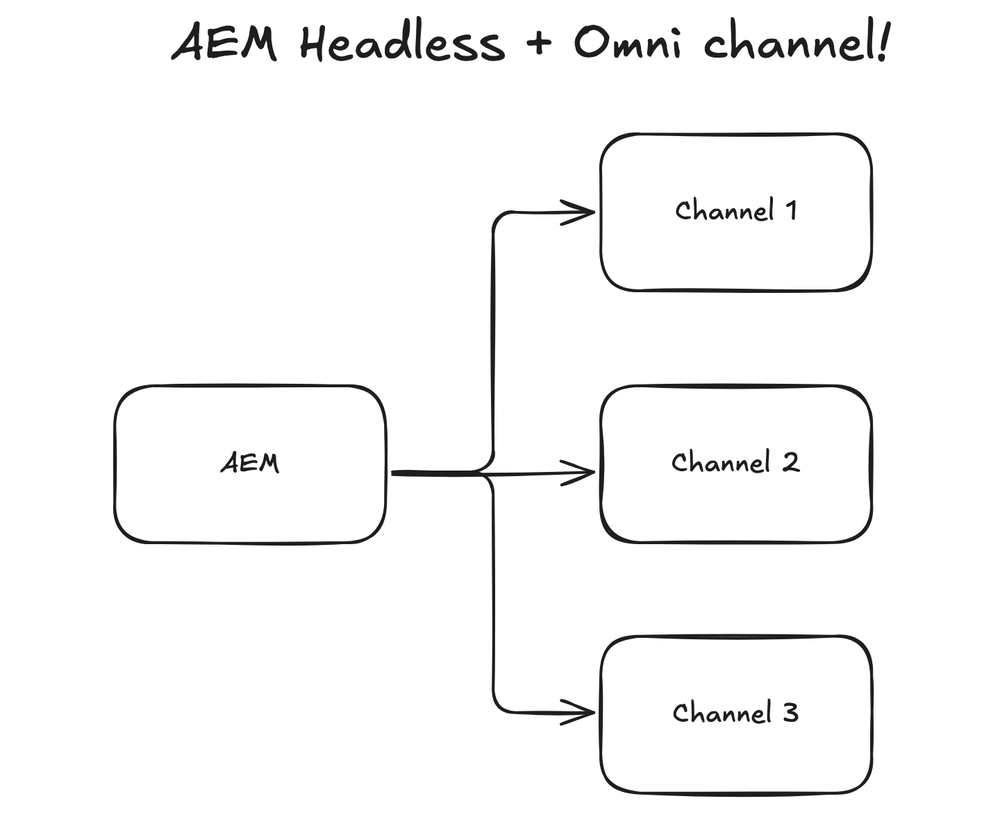
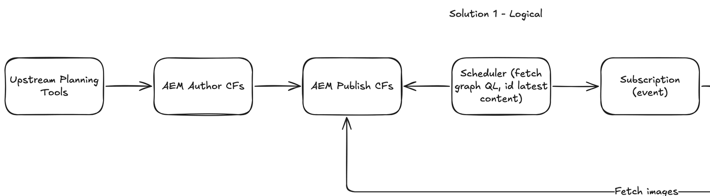
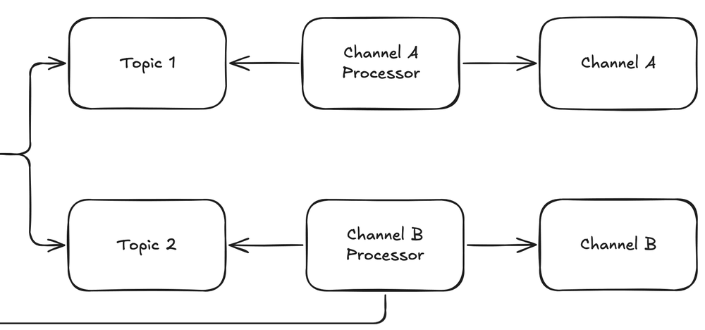
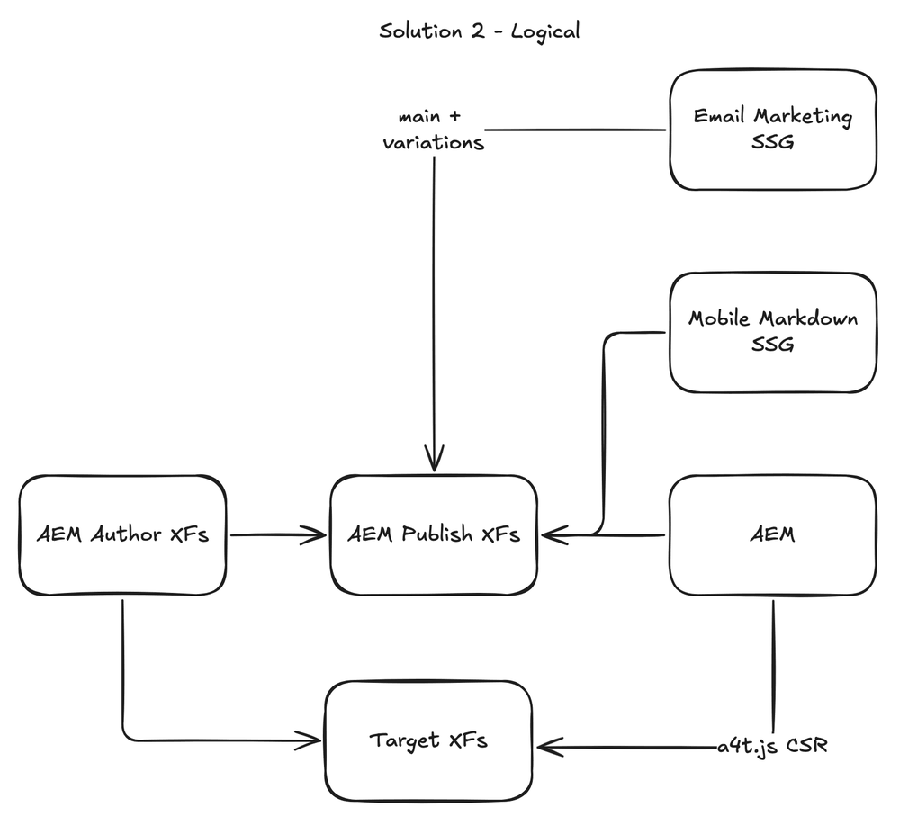
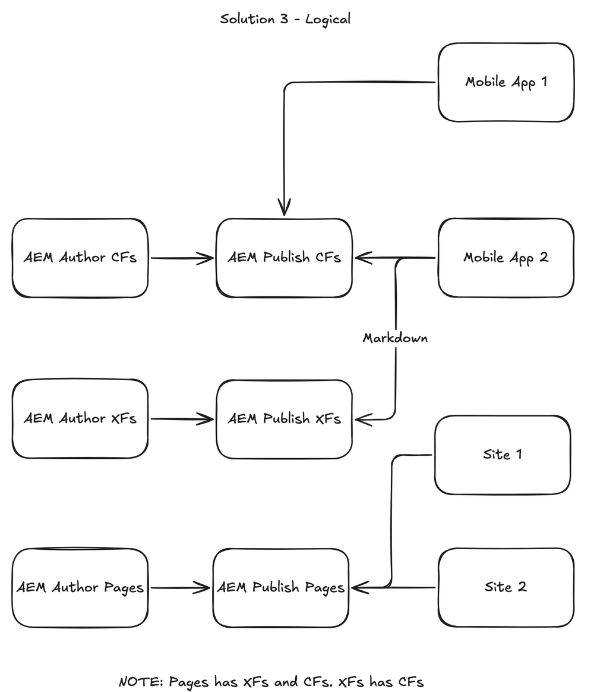

I walk through it in the same order as the video. Every part links to its moment in the video if you'd rather watch.
Also published as a LinkedIn video on July 12, 2025. Rewritten for this site in October 2026.
What changed since July 2025
- Solution 1 queries content fragments with GraphQL. Adobe's persisted queries documentation recommends persisted queries over standard GraphQL queries, which run as POST requests whose responses can't easily be cached, and it lets you set the cache headers per query.
- Two months after this video I followed those cache headers through every layer, from AEM publish to the browser, in AEM caching in production.
- Location of personalization got a new option in my own work: AEM Edge Functions personalize the HTML on Adobe's CDN, before any JavaScript runs in the browser.
1. One AEM feeding email, mobile apps and websites
So what is AEM and omnichannel? Very simply put, it's AEM and more than one channel of content. That could be websites, mobile apps or email. When I wrote about AEM headless for frontend-led teams in May 2025, I went light on omnichannel on purpose and said I'd come back to it. This picks it up.
The main goal is an AEM system that's future-ready. It should allow for flexibility, content reuse, automated validation and version control, and it needs to support multiple teams and delivery modes.

A disclaimer, as on the board: the three solutions use a lot of fictional content, mixed together, to protect my previous clients' implementations. They reflect real tradeoffs I've run into in large-scale AEM work. On the board, each arrow starts at the box that makes the move: it publishes, sends or asks.
Watch this part0:00 What AEM omnichannel means
2. Solution 1 pushes content fragments out through event topics
Solution 1 starts with an upstream planning tool. That could be quite a few things: an Azure service, or a marketing planning tool. Whatever it is, sometimes it needs to create content fragments and experience fragments in AEM. In this example it's content fragments. Authors enter content, and the content fragment gets published.
A scheduler then queries GraphQL, finds the latest updated content fragments, and sends them to a subscription event. The scheduler makes sure every publication is identified and every update goes to the right subscription. Two topics listen to that event, and two separate channels listen to the topics. Each channel processes the publication and handles it in its own way.
Notice that Channel B fetches images from AEM publish. Some systems want to host images on their own, so images and content stay together.
This solution is very popular in event-driven architecture, where you have an event hub and topics. Some martech stacks really enjoy it; it's part of their core solution.


Watch this part0:25 Solution 11:49 Why event-driven stacks like it
3. Solution 2 shares experience fragments with email, mobile builds and Target
Solution 2 uses experience fragments instead of content fragments. Experience fragments can be used as headless content too, though you think about them a little differently. As I said in the video, Adobe Target has supported experience fragments since its early days with AEM 6.5, while content fragments still weren't supported there in AEM 6.5 when I recorded it.
So authors create experience fragments and publish them to Target and to AEM publish. Here's where it gets really interesting. Authors can use Target for the experience fragment, and the mobile apps and email marketing both have access to the same content and variations, so they can pick and choose which one goes in. That's an omnichannel vision with personalization.
The other callout on this diagram is SSG. Here it means the content is generated ahead of time, at compile time. Some mobile applications prefer to have their content cached within the app, so when it's published, the content becomes part of the application. You still keep the authoring and omnichannel capability.

Watch this part2:04 Solution 23:07 What SSG means here
4. Solution 3 serves pages and fragments to every channel from one publish tier
Solution 3 has AEM pages, experience fragments and content fragments. Note the line at the bottom of my board: pages use experience fragments and content fragments, and experience fragments also use content fragments. That enables quite advanced capabilities within AEM. Site 1 and Site 2 both use pages, and those pages in turn use experience fragments and content fragments.
As in Solution 2, Markdown lets mobile apps consume published experience fragments, and as I noted in the video, content fragments also support Markdown within the Adobe ecosystem. Mobile App 1 consumes only content fragments, using GraphQL. Mobile App 2 consumes content fragments and experience fragments in Markdown.
I consider this one of the more flexible hybrid methods in AEM. Pages share content from experience fragments and content fragments, and that same content is shared with other applications. It shows the complexity of AEM headless, and its potential.

Watch this part3:35 Solution 3
5. Six considerations that play out differently in each solution
Six things I'd call attention to across the three diagrams:
- Publishing pattern. Sometimes you publish to a queue. Sometimes you publish and wait for the content to be pulled. And sometimes you publish and also trigger something on the other side to let it know the content is ready to be retrieved.
- Push vs pull. Sometimes content gets pulled from AEM, and sometimes AEM pushes the content to the right place.
- API vs event driven. In headless and martech, sometimes it's API driven and sometimes it's event driven.
- CSR vs SSR vs SSG. Some headless content is surfaced with client-side rendering, some with server-side rendering, and some generated ahead of time. Adobe Target is a good example of client-side rendering: the browser calls Target and renders the content.
- Data type. On these boards: HTML, Markdown and JSON.
- Upstream automation. In headless it's not uncommon to have upstream automation, so content fragments and experience fragments are created automatically.
The three solutions answer the same six questions differently, and that's easier to see than to read. Pick a consideration below: on each of the three diagrams, the boxes and arrows it touches light up, and the line under each diagram says how that solution handles it. It opens on push vs pull, where all three differ.
Solution 1 · content fragments and events
Solution 2 · experience fragments, SSG and Target
Solution 3 · one publish tier, many consumers
All six, side by side
| Consideration | Solution 1 | Solution 2 | Solution 3 |
|---|---|---|---|
| Publishing pattern | Authors publish content fragments. A scheduler then finds the latest updates on publish and sends them to a subscription event. | Authors publish experience fragments to Target and to AEM publish. | Three publish streams side by side: content fragments, experience fragments and pages. |
| Push vs pull | Both. The scheduler pulls from publish, then the event pushes the change out through the topics. Each processor reads its topic and pushes to its channel; Channel B pulls images back from publish. | Mostly pull. The two builds and the AEM site ask publish for fragments. The push is author sending fragments to Target, which the site then pulls in the browser. | Pull. Every app and site asks publish for what it needs, when it needs it. |
| API vs event driven | Event driven after one API call. The scheduler queries GraphQL, then everything downstream reacts to the subscription, the event hub and topics pattern. | API. Each consumer calls publish or Target directly. | API. There are no events on this board. |
| CSR vs SSR vs SSG | Not labeled on the board. Each channel processor owns what its channel gets. | Labeled: email and mobile are SSG, generated ahead of time at compile time. Target is client-side rendering: the browser calls Target and renders the content. | Not labeled on the board. Each app and site still has to pick one. |
| Data type | GraphQL over content fragments, so JSON. | The mobile build works in Markdown. The email build takes the main fragment plus its variations. | Mixed on one publish tier: Mobile App 1 reads content fragments with GraphQL, Mobile App 2 reads fragments as Markdown, and the sites read pages as HTML. |
| Upstream automation | An upstream planning tool, maybe an Azure service or a marketing planning tool, creates content fragments in AEM author. | None on this board. Content starts in AEM author. | None on this board. Content starts in AEM author. |
Watch this part5:00 The six considerations
6. Six more considerations that don't fit in a diagram
A few other considerations didn't get a diagram.
Modular vs page. With modular content, you produce content at the module level and don't really touch the page; the page is set up to pull in modules. In a true modular content perspective, modules are self-identifying and make themselves available. They can be used on many pages and many channels, they may have a go-live and a go-off time, and they might be made for specific campaigns. The page is more of a channel-specific concept. Large, true headless implementations think of content as modular, while more traditional headless implementations still have pages, and modules get added to them. The biggest difference: in a true modular implementation, modules are the only thing marketers modify, and pages pull in the modules automatically.
Location of personalization and classification. There are two places it's generally done. The first is the CMS, AEM, where authors create the content and tag it with the right type. The second, and more common, is Adobe Target or a similar system.
Taxonomy. This is a very large topic in headless. It probably deserves its own video.
Explicit content versioning and cutover. Some content is marketing content, and that's what AEM is used to. As soon as you get into the headless world, some content is legal statements and insurance forms. That isn't usually considered marketing content, but it's managed in AEM. It carries legal impact that marketing content doesn't, and sometimes it needs a very strict review process, not only for code but for content.
Thorough content validation through CI/CD. Sometimes content is built within the CI/CD pipeline, so the content is reviewed and processed by CI/CD as well.
Hybrid: sites plus headless. Sites and headless work really well together in a hybrid pattern, where you use AEM for headful content as well as headless content. Solution 3 is that pattern.
A month before the video I'd written down my take on going headless: content fragments with the Universal Editor have a strong omnichannel story, but they can be overkill if you're not integrating across multiple touchpoints. That's in Making sense of seven AEM capabilities.
Watch this part6:22 Modular vs page7:37 Personalization and taxonomy8:08 Cutover, CI/CD and hybrid
Later work on caching and Adobe's CDN
These three diagrams are about getting content out of AEM. Later articles picked up from there: in September 2025, caching at every layer between publish and the browser, and a year later, running code on Adobe's CDN itself. Both are linked at the top of this page.